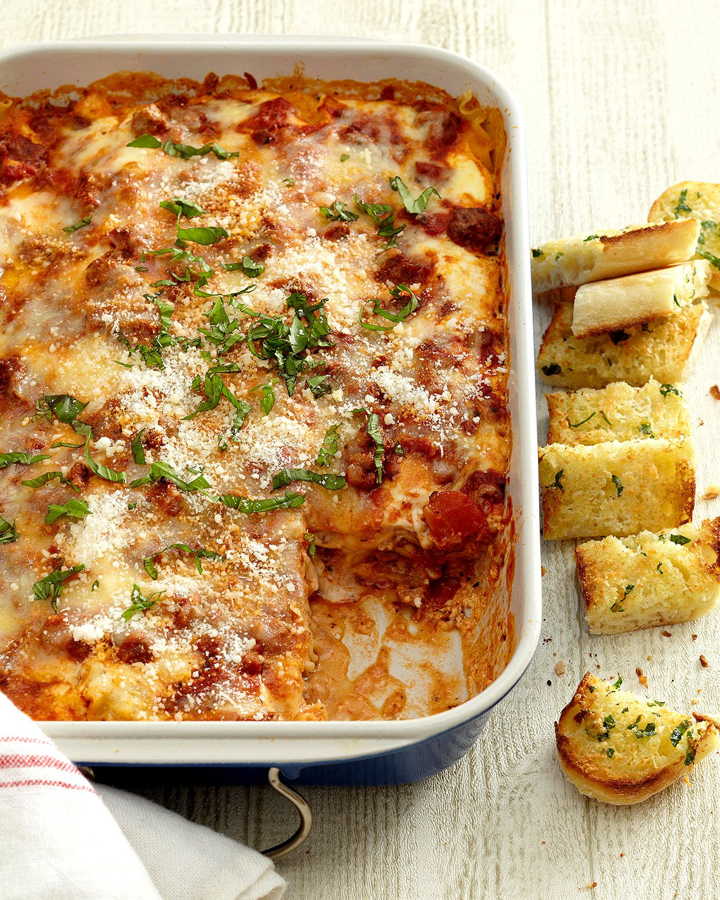

Lasagna

Description
Making lasagna can be time-consuming, but the results are well worth the wait. You'll find a detailed ingredient list and step-by-step instructions in the recipe below, but let's go over the basics.
Ingredients
- 2 tsps Olive Oil
- 1 lb ground beef chuck
- 1/2 medium onion, diced (about 3/4 cup)
- 1/2 large bell pepper, diced (about 3/4 cup)
- 2 cloves garlic, minced
- 1 (28-ounce) can good quality tomato sauce
- 3 ounces tomato paste
- 1 can crushed tomatoes
- 2 tbsp chopped fresh oregano
- 1/4 cup chopped fresh parsley
- 1 tbsp italian seasoning
- 1 pinch garlic powder and/or garlic salt
- 1 tbsp red or white wine vinegar
- 1 tbsp to 1/4 cup sugar (to taste, optional)
- Salt
Steps
- Put pasta water on to boil
- Brown the ground beef
- Cook the bell peppers, onions, and garlic; add back the beef
- Make the sauce
- Boil and drain the lasagna noodles
- Preheat the oven to 375 deg Fahrenheit
- Assemble the lasagna
- Bake
- Cool and serve